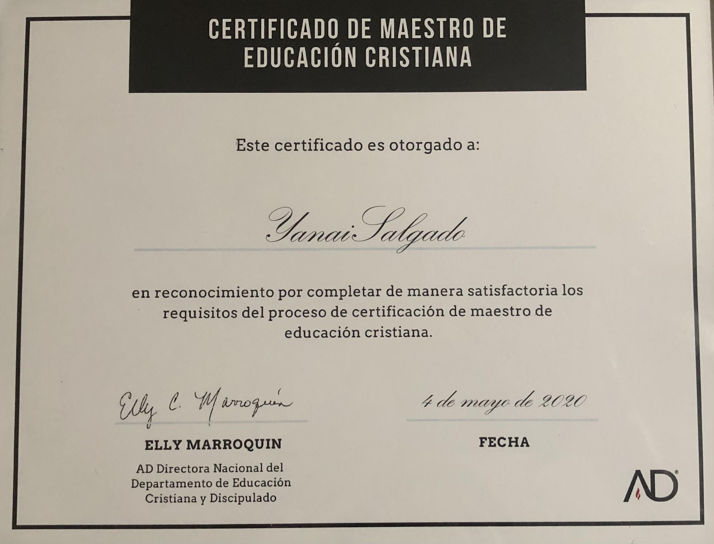
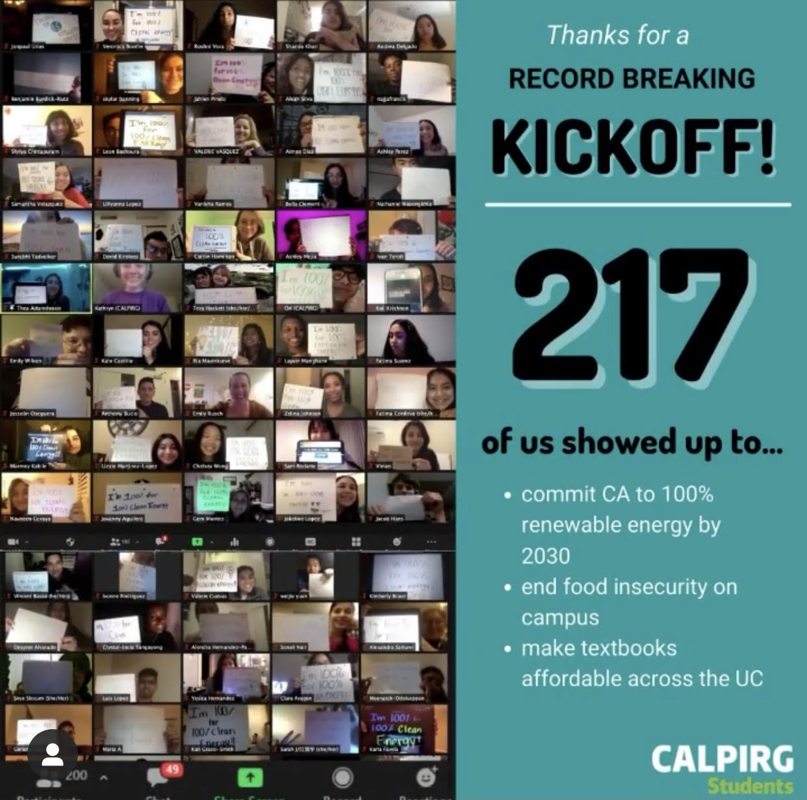

Yanai Salgado
I am currently a junior at the University of California Riverside. I am pursuing a Bachelors of Arts for Spanish with a concentration in Linguistics. I am also looking forward to declaring English as a minor in the following term. Being able to get to know how complex Spanish is, has left me intrigued into wanting to know more. I am planning on applying for a graduate program after I graduate in Spring 2022.
I am currently my oldest brothers' personal assistant at his growing landscape business. This has helped me gain better communication skills with clients. It has also introduced me to Microsoft Excel which has been a great help in keeping our important information organized. I am also devoted to growing as a person which is why I like to try many things to see how I would adapt to its environment and see if I like it. In this case I am talking about being a Christian Instructor at my local church. I took a big step around March 2020 by taking a teaching course for about two months. After taking an exam regarding the course, I received a Christian Education Certificate. This helped me be able to find an area that I would like to teach. In May, I was chosen to be in charge of teaching a small group of girls in one of the ministries. This teaching opportunity helped me gain critical thinking skills. I was able to find the best way my students learned while working to meet the goals we had to accomplish. I really enjoyed this position as I was more self-disciplined. I needed to manage my time to to have time for myself, school, my students, and my family. Most of my time teaching was through zoom because of the COVID pandemic regulations. At the start of this year, my students moved on to a different class. As there were no other students entering my class, I am currently on a break until then. This opportunity is very important to me as I am seeking in becoming a Spanish Instructor at the community college level.
Being able to take part in a club that would help our community is also very important to me. After a guest speaker came into one of my lectures to talk about Calpirg Students, I knew that this was a great opportunity. I reached out to one of the coordinators to get to know more information about this organization and I signed up to attend their first meeting of Winter quarter. At the first meeting I got more informed about serious problems that are not just impacting our city, but our family on campus. We took a big step in pledging for clean and renewable energy by the year 2030 and I also decided to help in the clean energy campaign. Being a part of this club has helped me see everything in a new perspective. These experiences have helped me grow as a person and helped me consider teaching as a profession in the future.
Experience
Personal Assistant
• Responsible for answering calls
• Time-management skills
• Experience with Excel
Christian Teacher
• Bilingual
• Experience with Microsoft powerpoint
• Communication Skills
Education
University of California Riverside
Portfolio

